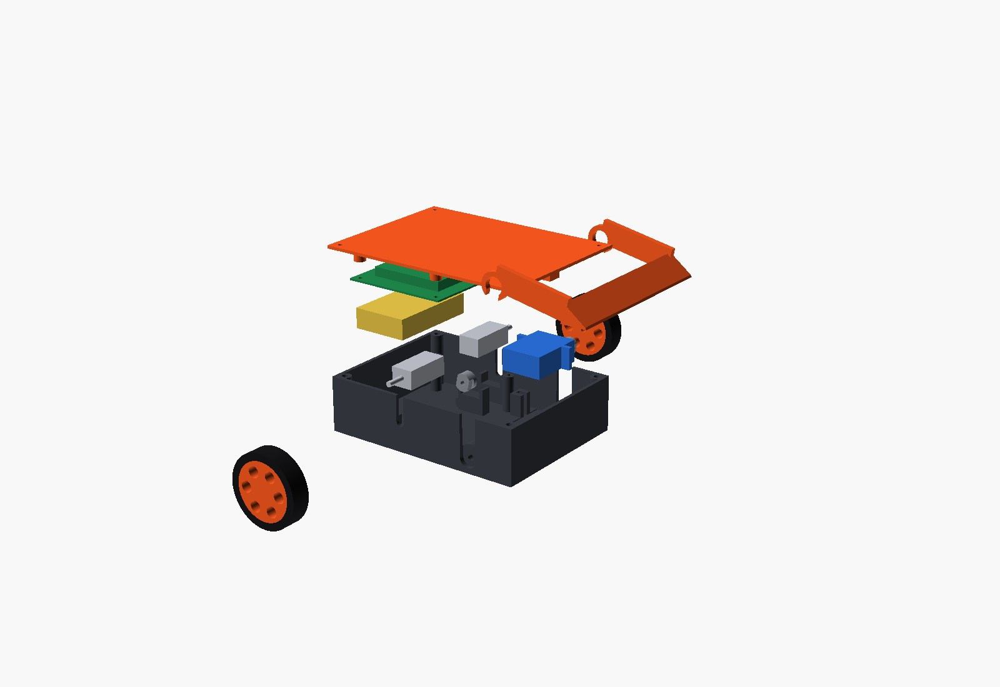
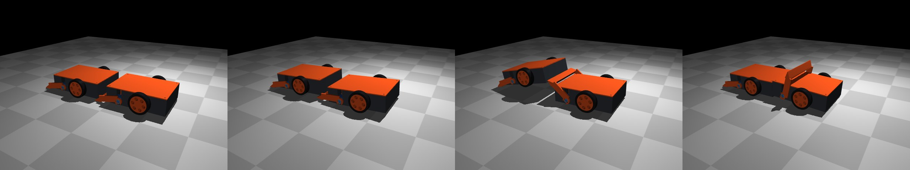
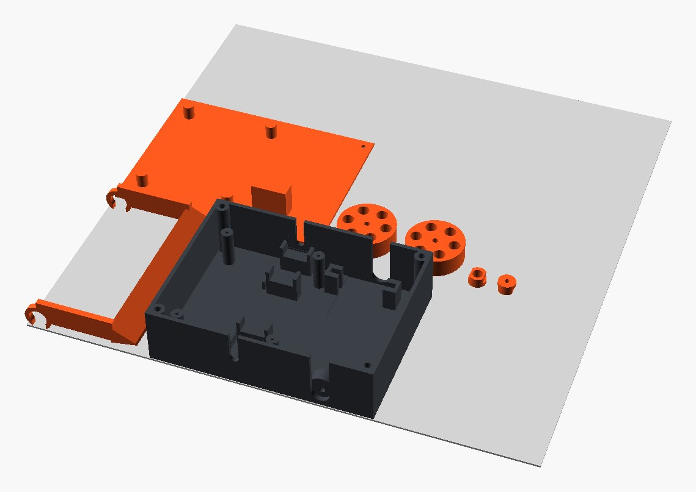

We wanted a demo that people stop and watch, and that also exercises the whole pipeline: a combat robot. It's a 1 lb antweight, 3D printed, with a wedge and a servo-driven lifter so that two of them can actually fight without a spinning blade in the room. The other constraint is the one that makes it a punkfab project and not a hobby build: it has to be designed for a robot to assemble it. Every part has to go in along a straight line that a pick-and-place cell could follow, there should be one fastener family, and there should be no loose wires.
This post covers the first day. It produced a parametric bot at 176 g that passes its part, mass, assembly and derivation gates. Its weapon gate is red: in simulation, the lifter cannot flip a copy of itself, and the reason is geometry, not motor torque. The day also changed how we structure designs. Partway through, the question "is the simulation re-describing the geometry?" turned out to have an uncomfortable answer. The fix was to make the assembly, not the part, the design artifact that everything else is generated from.

01 / The brief, and the word "cell"
Antweight, low end of the class. Fairyweight (150 g) would print faster but leaves no room for a battery, an ESP32 and a servo; antweight (454 g) does. The weapon is a wedge plus a servo lifter: it's safe, easy to see, and pushing and lifting are the contact problems MuJoCo handles well. Control is an ESP32 driven from a phone rather than a hobby RC receiver, because a custom carrier board is what eventually removes the wiring harness from the assembly. The drive is two-wheel skid steer. Our locomotion library has a three-omni-wheel base, but omni and mecanum rollers have almost no sideways grip, and a pushing robot gets shoved sideways. Skid steer goes back into that library as a new modality.
The project also forced a naming decision. "Cell" already meant three different things across our repositories, so we fixed the vocabulary. A design block is a reusable design unit (a wheel module, a lifter). A build cell is a physical factory station that does one class of operation: drive a screw, press a heat-set insert, press-fit a hub, pick and place. A product is neither; it is a recipe, an ordered set of operations routed across build cells. Whether we end up with one cell per operation type or one cell per product is still open, and this bot's recipe is the first evidence.
02 / One parameter file, parts placed by mates
Everything shared lives in one frozen dataclass, so a design variant is P(arm_len=64). The bought parts (N20 gearmotors, a micro metal-gear servo, a 2S 300 mAh LiPo, the carrier board) are modelled as envelopes with a mass and named mate points. A layout module turns the parameters into datums, and the chassis grows its locating features from those datums: U-saddles for the motors, slotted blocks that capture the servo's mounting ears, posts with locating pins for the board, and a low fence for the battery. The assembly then snaps every part onto the same datums, so a feature and the part it locates cannot drift apart.
The bot weighs 176 g, which leaves 278 g of headroom under the class limit. 75 g of that total is catalog-nominal and not yet weighed, and printed mass is CAD volume times density times a fill factor that the first prints will calibrate. It also drives upside down: the wheels stand 3.4 mm proud of the lid.
03 / What the assembly gate caught (six defects, zero prints)
The assembly recipe is code: 17 steps, each naming the build-cell operation it needs, the parts it moves and the direction they travel. The gate sweeps each part in along that direction from 40 mm away, checking it against everything already installed, with exact overlap volumes from the boolean engine. It reuses the interference checker from our manufacturing-orchestration code by reference rather than copying it. A static fit check and an arm-swing check run alongside it.
- The motor shafts pass through the side walls, so a motor cannot be dropped in from above. The same is true of the servo's output spline. The fix is the standard one: keyhole slots open to the rim, which the lid caps, so it also retains the motors vertically.
- That change suggested a better lifter mount. The fork now has downward-open notches and drops onto two keyed hubs, with one screw per side to retain it, instead of needing to be threaded onto a shaft sideways.
- The first keyed hub had a 0.4 mm wall around the spline bore. Hub radius went from 3 to 4.5 mm.
- Widening the wall slot to suit the bigger hub left the passive pivot boss as a separate floating solid. The boss is now wider than the slot so it bonds to the wall around it.
- The wheel hub's D-bore was on the outboard face, a frame-convention bug the press-fit sweep found when the hub hit the motor 5 mm before seating.
- The best one: the servo's rear mounting ear passes straight through a board post on the way down. At the final pose everything looked fine, because the ear-slot cut had carved a notch into that post. The ear just can't get down to the notch. Only a swept check finds that. The board got 4 mm shorter.
A seventh defect came from the simulation rather than this gate. At rest the lifter's side plates dipped 4 mm below the ground plane, so the bot sat on them and the wedge never touched the floor. There is now a gate that only tyres and the wedge may reach the floor.
The design-for-assembly report at the end: five build-cell operation types, one fastener family (six M2 screws, five M2 heat-set inserts), and one manual step, which is connecting the wiring. On our op-graph scheduler, with one server per operation type and nominal step times, it schedules in 214 s against 266 s run sequentially. The step times are placeholders; the useful output is which operations exist and in what order. The manual wiring step is the open problem, and it is why the board will carry board-mount connectors.
04 / The weapon gate is red, and that's the useful result
The duel is two copies of the bot in MuJoCo. A charges and, on wedge contact, lifts to its stop while still pushing; B brakes, as an H-bridge does. The drive motors are a linear torque–speed model and the servo is a P loop that saturates at its stall torque and loses torque with speed. These are deliberately not ideal actuators; our last post showed how much an ideal servo flatters a sim. Torques are catalog-nominal, so the gate re-runs at 0.7× and 1.3× and requires a pass across the whole band.

The first answer was "the servo stalls at 28°". That was wrong, and it was our bug: MJCF reads joint ranges in degrees by default, we had written radians, and the arm's up-stop was effectively at 1.9°. What looked like servo saturation was the soft joint limit pushing back. Measuring the contact torque on the arm directly showed −0.05 N·m against a servo putting out +0.34, which didn't balance, and that led to the joint limit. With the units fixed, the arm reaches its stop without ever saturating, and the twin still doesn't go over. A sweep over arm length and servo choice, with the twin approached from the rear and from the side:
| arm length | max twin tilt, rear | max twin tilt, side | flipped | servo at torque limit |
|---|---|---|---|---|
| 52 mm | 13–14° | 11–12° | no | never |
| 64 mm | 13° | 15–18° | no | never |
| 76 mm | 12–13° | 19° | no | never |
| 88 mm | 12–13° | 19–20° | no | never |
Ranges span three micro servos (ES08MA II, MG90S, MG92B, 2.0–3.5 kg·cm claimed). Driving deeper under the twin before lifting, or pushing harder while lifting, changes nothing. The hand calculation explains why. To tip the twin over its front edge, its centre of mass has to pass over the front contact, which means tilting it close to 80°: about 130 mm of lift at the rear. A rotary lifter's tip also swings backward as it rises, so the twin slides off the end long before then. Servo torque isn't the constraint; reach and the arc are.
The more interesting measurement came from asking what the lift is good for, if not flipping. With B driving backward into A at full throttle, we measured how far A shoves it and how often B's drive wheels are off the floor:
| A's lifter | B shoved (2.2 s) | B's tyres off the floor |
|---|---|---|
| at rest (passive wedge) | 73 mm | 75% of the time |
| full swing to the stop | 37 mm | 7% |
| held at 5° | 31 mm | 100% |
| held at 20° | 21 mm | 100% |
The passive wedge does most of the work. A full swing makes things worse: the twin pops up, falls off and gets its traction back. Holding a small lift keeps B's wheels off the floor all the time, yet A pushes it less far, and we don't know why yet; that is the next instrumented question. The gate stays red because it encodes the requirement, not the hope. For now we're keeping the simple lifter. The obvious next mechanism is a four-bar lifter whose tip rises nearly straight up, and that need drove the next part of the day.
05 / The assembly is the design artifact
The question that changed the structure: is the MuJoCo model referencing the build123d geometry, or describing it again? The honest answer was partly both. The visuals were the real exported meshes and the masses came from the CAD. The collision shapes, though, were boxes and cylinders typed in from the parameters, the wedge's collision shape repeated the arm's polygon maths, the inertia tensors were box approximations, and the bodies and joints were declared again in the sim file. Any of those could drift from the CAD without a test noticing.
The fix was to stop treating the part as the unit of design. The bot is now written out as an assembly IR, featuretree's neutral assembly format: 14 occurrences (each part's own local geometry plus its placement) and 13 mates (fastened within each rigid group, revolute for the two wheels and the lifter), with mobility 3. Everything else is generated from that file:
- The MuJoCo model. Bodies are the fastened groups, joints are the mates, and geometry is each part's own mesh, with inertia integrated from it. Collision uses the convex hull, except where the hull is wrong: a U-fork's hull fills the gap between its plates, so the arm declares its own convex pieces, built by the same function that builds the arm. The sim file no longer contains any geometry. It adds the arena, the actuator laws and the tactics, and nothing else. A gate checks the generated model's mass against the CAD roll-up: 176.29 g both ways.
- 3MF. 3MF has no parameters and no joints, so it is never the design source; it is what the design is delivered as. One package holds the whole assembly as a components object and carries the assembly IR inside the zip; read back through lib3mf, every part sits within 0.006 mm of where the CAD puts it. A second package is the same assembly with the arm raised, posed by the kinematic solver. The real manufacturing use is print plates: printed parts in their print orientation, packed onto the bed, one plate per material. The print orientation is a design-for-manufacture decision stored with each part. Our first orientation for the arm stood it 91 mm tall; flat, it is 16.5 mm. The TPU tyres are exported with their bore 0.4 mm undersized, because the stretch is what holds them on.

Loop-closing mates. A four-bar is a closed loop, and the assembly format only allowed a tree of mates, which is what keeps it compatible with cadgen's sidecar. So closures now live in their own list next to the tree: a revolute, spherical or fastened constraint between two occurrences that the tree already connects. Nothing that walks the tree ever sees a cycle. That needed four things. Validation rejects a "closure" between parts the tree doesn't already connect, since that's just a mate. The mobility count treats planar loops as planar, so a four-bar comes out at 1 degree of freedom where the textbook spatial Grübler count says −2. A small numpy pose solver drives some joints and solves the rest so every loop stays closed, continuing from the authored pose so a four-bar doesn't jump into its crossed form. And the MJCF emitter writes closures as MuJoCo equality constraints, one point constraint for a planar loop and two along the axis for a spatial one. The test is a Grashof crank-rocker checked against the closed-form solution, not against itself. The solver matches it to 0.001° over a full crank turn, and in MuJoCo the rocker tracks within the test's 0.5° with the loop closed to within 0.2 mm. featuretree's full suite passes, including the new loop and 3MF tests, and the assembly work is merged.
06 / What's left before printing
Every unmeasured number is labelled as such, so the list is short and specific. Weigh the bought parts and the first prints, and write the printed-to-solid mass ratio back into the parameters. Bench the servo's stall torque and the N20s' speed, stall torque and gearbox backdrive friction. The last one is a guess in the sim, and it decides how hard a braked opponent is to push. Move the printed parts from build123d scripts into featuretree's part IR so FreeCAD and Onshape files come for free; that needs one new primitive, an additive extrude on an arbitrary plane, the mirror of the existing placed cut. And design the board-mount connector scheme that turns the one manual step into a mate-the-connector operation a build cell can do.
The CAD, recipe, sim and gates are open at punkfab/battlebot, with every gate one make target away. The assembly IR, pose solver, MJCF and 3MF emitters are in punkfab/featuretree; the background on the IR itself is in One feature tree, several CAD systems. Want a machine designed for the robot that will build it? Start a project →